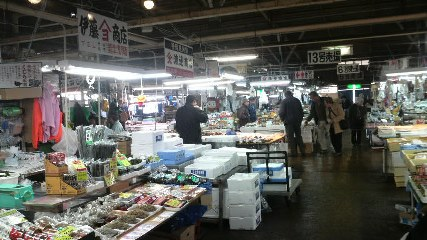
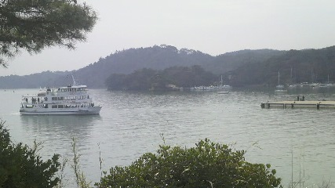

松島遠征
2014/03/29
海鮮食いに行こうぜ！
ってなことで仙台の内陸から松島まで行って野郎3人でうまいもの食べてきました。
←なべっち おなじみkaz氏→
発案：自分
計画：kaz氏
運転：なべ氏 の提供でお送りします。
さて出発。
今回の交通は車を持ってる友人なべ氏を巻き込んでそこそこいい時間の午前に集合。
車内で順調にラボ畜（研究室の家畜）の道を歩む二人の近況を聞きつつなべっちの運転でまずは塩竈へ移動。
目的地は松島なんですが途中寄り道して塩竈の仲卸市場（魚市場）に向かいました。
今回のおおまかなルート
車でだいたい一時間、この日は暖かく上着がいらないくらい。天気もちょうどいい感じでした。
塩竈仲卸市場
こういう市場は朝早くから卸が始まって午前中には終わるイメージを持っていたのですが
ここは午後14時までやっているようで活気がありました。

中の様子
市場だけあっていろいろ。
当たり前ですが海産物は一通り揃ってますし、中にはこんなものも。
クジラのひげ
ここでは鯨肉と生牡蠣を購入し、生牡蠣はその場で食べました。
生で食べられるのは市場の特権よねー レモンでうまー( ﾟДﾟ)ちょっと水っぽいな
松島もあるのでここは見るのメイン。見てるだけでもおもしろかったです。
・
・
・
鯨肉を発泡スチロールで梱包し（一番始めの写真の箱）、車のトランクへぶち込んで次へ移動。
松島の町に入る手前、ちょっと入ったところにいい感じの見晴らし台がある（kaz君情報）とのことでそちらへ。
うひょ〜
うぇ〜い
林
波打ち際
デジカメ購入が間に合わなかったのが悔やまれる。（次回からはデジカメになってると思います）
とにもかくにも良い自然でした。地震でちょっと壊れたことも悔やまれる。
で、トンネルを抜けるとそこは 雪国 松島の町でした。
車の停め場所を見繕って、散策へ。
こちらにも市場がありました。が、ここは物産メインという感じ。
牡蠣バーガーおいしかったです＾ｐ＾（牡蠣がそのまま入ってるんじゃなくてカニクリームコロッケみたいな感じでした）
それと向かい側には
焼き牡蠣食べ放題
これがまた良ーい香りがしてくるんですよ。
kaz「牡蠣食べ放題と海鮮どっちがいい」
とのことで迷いましたが海鮮で（塩竈市場で生牡蠣食べたし）
その前にそばにあった五大堂を見物に

詳しい由来はこちらをどうぞ。
橋の下が見えてちょいこわ。
向こうに見えるはフェリーじゃあないか。

子供のころに乗ったことあるはずなんだけど全く記憶にない。
うみねこだかカモメだか水鳥がエサをねだって飛び回ってました。
さてお昼、お待ちかねの海鮮です。
今回行ったのは「おりこ乃」さん。
ちょっと迷いましたが見つけて階段を登り店内へ。
注文して一息つく。松島の風景が一望できます。
先にきたのはなべ氏の焼き牡蠣を使った丼、
うまそう
次は自分の刺身膳
うまかった
最後はkaz氏の牡蠣と海鮮複合のセット
うまい（確信）
いやー堪能しました。
大満足。
・
・
・
そして帰り道。
なんやかんやありましたが楽しかったです。（アウトレット？知らんな）
あとこんな看板見つけました。
仙台(近道)
3人してつっこみまくりました。
運転してくれたなべ氏ありがとうな！
来週もよろしく！
2014/04/10 written by shift
旅行記 メニューへ戻る